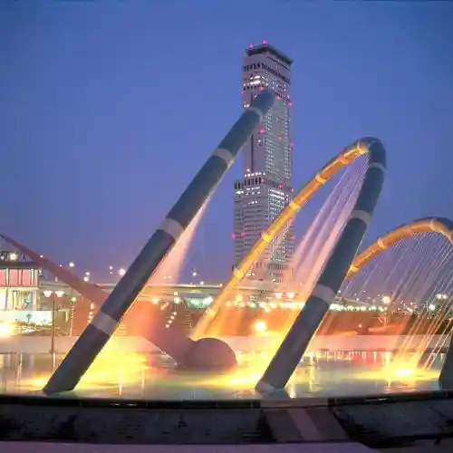
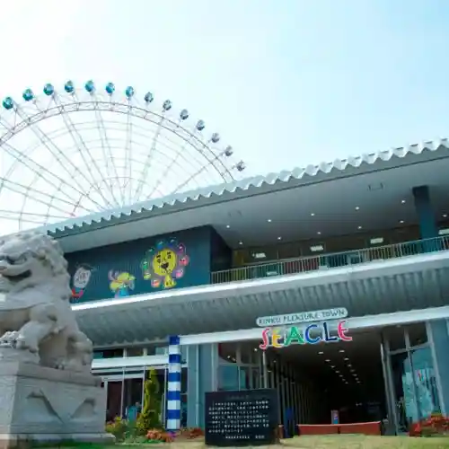
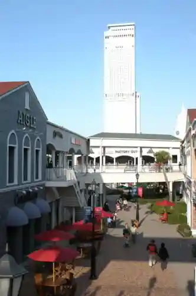

e Sutajiamu Izumisano
Izumisano, Osaka · Official / source link
Rinku Taun
Izumisano, Osaka · Official / source link

Rinku Purejataun SEACLE (Shiikuru)
Izumisano, Osaka · 072-461-4196 · Official / source link

Rinku Puremiamu Autoretto
Izumisano, Osaka · 072-458-4600 · Official / source link

Rinku Puremiamu Autoretto Infomeshon Center Uerukamu Center
Izumisano, Osaka · 072-458-4600 · Official / source link
Rinku Park
Izumisano, Osaka · 072-469-7717 · Official / source link
Wakuwaku Kanku Kengaku Puran (Kanku no Uragawa Tanken Kosu)
Izumisano, Osaka · 072-455-2082 · Official / source link
Kitanosho Tsukasa Shuzo
Izumisano, Osaka · 072-468-0850 · Official / source link
Oi Kan Park
Izumisano, Osaka · 072-469-3131 · Official / source link
Naka Bi Shrine
Izumisano, Osaka · 072-462-7080 · Official / source link
I Kami Shrine
Izumisano, Osaka · 072-468-0540 · Official / source link
Jigan In
Izumisano, Osaka · 072-467-0092 · Official / source link
Hine Shrine
Izumisano, Osaka · 072-467-1162 · Official / source link
Kyu Mukai Ie House
Izumisano, Osaka · 072-447-6766 · Official / source link
Izumisano Gyokyo Aozora Market
Izumisano, Osaka · Official / source link
Hi So Shrine
Izumisano, Osaka · 072-459-7511 · Official / source link
Inunaki Yama
Izumisano, Osaka · 072-469-3131 · Official / source link
Inunaki Yama Shippo Taki Tera
Izumisano, Osaka · 072-459-7101 · Official / source link
Ari Tori Shrine
Izumisano, Osaka · 072-465-0897 · Official / source link
Kanko Omotenashi Plaza (Izumisano Machi Tokoro)
Izumisano, Osaka · 072-469-0724 · Official / source link
Kanko Koryu Plaza (Rinku Machi Tokoro)
Izumisano, Osaka · 072-474-2056 · Official / source link
Kanku Aisuariina
Izumisano, Osaka · 072-463-6880 · Official / source link
Kanku Tembo Horu Sky View (Sukaibyu)
Izumisano, Osaka · 072-455-2082 · Official / source link
Kansai Kokusai Airport
Izumisano, Osaka · 072-455-2500 · Official / source link
Kansaikuko Chokuei Menzeiten KIX DUTY FREE
Izumisano, Osaka · 072-455-4195 · Official / source link